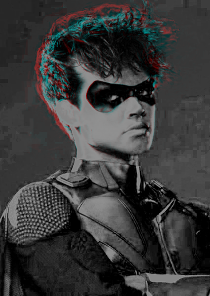

Work
These are all the projects that I've done from Junior to begining of Senior year
- All

Jason Todd
I created Jason Todd by using Adobe photoshop my junior year of highschool

Lady
Lady was also created from using Adobe Photoshop

Tour Guide
Tour guide was a project that was created by HTML, CSS, and Javascript and JQuery. Since you can't see what it does, I'll explain it to you. If you click the left or right arrow, it will bring to a image of a place with the description of where it is
Simon Game
Simon was inspired by the real game. I realized that a lot of people don't have the actaul game, so I created it to be digital.It is created by HTML, CSS, and Javascript. For people who don't know the game or how to play, here are the instructions. Slide the ON/OFF switch to ON, the Game Selector switch to "1" and the Skill Level switch to 1, 2, 3 or 4.
Press the START button.Simon will give the first signal. Repeat the signal by pressing the same color lens.
Simon will duplicate the first signal and add one1.

Little Bird Website
Little Bird Website was the first website I created in 11th grade. Made like all the others from Html, CSS, and Javascript. Little Bird is toyshop, where parents can get their kids handmadeblocks to play with for a cheep price

Top Tv Shows
Welcome to Top TV shows, where you can learn what's popular and where to watch it.
pawsome
Pawsome was a website thatI created for a project. Owners of Furry-legged freinds can shop and browse ecofriendly pet clothes here for a reasonable price.

Schedule
The schedule project was created with JQuery, Javascript. Html, and CSS. How it works: Students enter in their schedule and then pick what day it is. (Days are A-G) and voila, their schedule appears. Rather than having to look at a printed schedule, they can now access it through their phones!

Food Class Project
This project was the last main project to be completed senior year. What are the requirments you ask? Step one: Pick and Email a client (clients are real people) and ask if they are comfortable with you creating a website for them. Step 2: Ask your client or clients what they want to be displayed on the website. Ex: Themes, Color skemes, fonts, designs, etc. Step 3: Create the design. *note for this step, don't rush and take your time. And now for the final step, Show your client your final design and ask for feedback.
Sssnake
Snake is a fun game to play. Inspired by Google snakes, players can now play this game when ever they want. This game was Created by html, css, and Javascript.

Tic Tac toe
Tic Tac Toe is also a fun game that can be played against a computer. This game was also created by Html, CSS, and Javascript.

Rock Paper scissors
Exactly like tic tac toe, players can also play this game against a computer.

Light and Dark
Light and Dark is a simple pag, where you can toggle between light and dark.It is created by just Javascript.
Divergent
This handmade Divergent book cover was created with Adobe Illustrater during a pre-college week at TCNJ